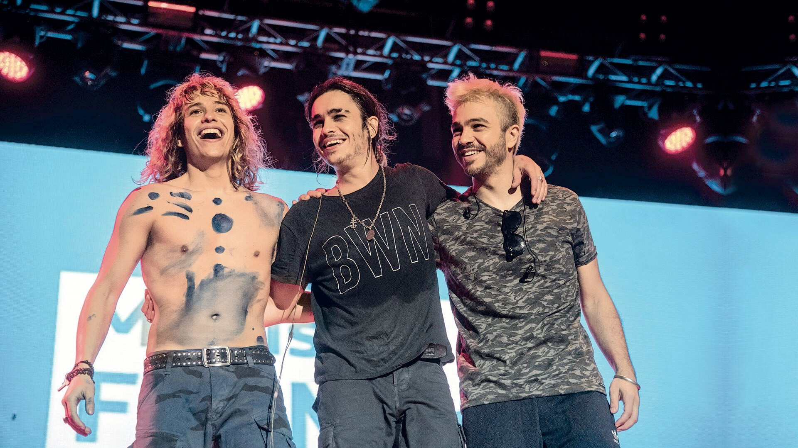
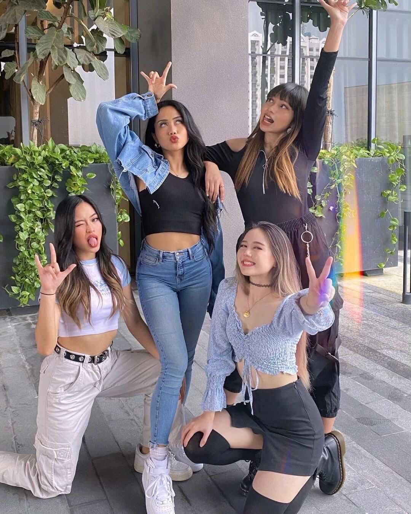
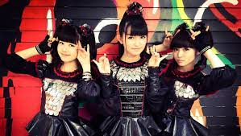
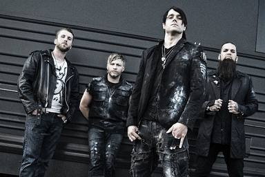

Bienvenido
Hola! Somos BioCAnta y aquí te ofrecemos las mejores biografías de cantantes para que los conoscas o sepas más de ellos.
Por aquí te vas a encontrar con cantantes y grupos como BTS, ULTIMO, Airbag, LiSA, entre otros.
Pertenecientes de lugares como:


Argentina
Haz click y te dirigiras directamente a el artista.
Seven Kayne
 Joaquín Cordovero, mejor conocido como Seven Kayne, es un cantante argentino de trap que nació el 01 de agosto de 1999 en Buenos Aires, Argentina.
Joaquín Cordovero, mejor conocido como Seven Kayne, es un cantante argentino de trap que nació el 01 de agosto de 1999 en Buenos Aires, Argentina.
En 2017 Seven Kayne lanzó su primer tema, “Si Te Lastimé”, el cual estuvo producido por la compañía discográfica Mueva Records.
En el 2020 lanza "Decime" y "Deja Vu", con los cuales logró un gran éxito. En septiembre lanza "Con Otra”, canción con un enfoque más romántico y pop que alcanzó los 2M de reproducciones en Youtube en su primer mes, llegando a estar #5 en Tendencias en Argentina y alcanzar más de 1M de reproducciones en Spotify.
En noviembre lanza "Wave", buscando un sonido entre rock y trapero y letras muy propias de la cultura rap. El 15 de diciembre presenta “Eyes on my ice”, canción de que lo encuentra en un cruce con los chilenos Polima Westcoast y Young Cister. El 29 de diciembre lanza su ultima canción del año "Hablamos Poco, Hacemos Mucho" junto a Duki.
A finales de abril del 2021 lanza su EP “Secretos perdidos”.
Nicki Nicole
 Nicki Nicole es una cantante y compositora Rosarina. Con tan sólo 18 años, irrumpió en la escena cuando lanzó en su canal de YouTube, el 25 de abril de 2019, "Wapo Traketero". Con ese lanzamiento rápidamente Nicki Nicole generó furor en la comunidad artística y se convirtió en una de las máximas figuras emergentes en la escena. El 14 de agosto estrenó una sesión con Bizarrap y en tiempo récord se posicionó en el puesto #1 en el Top 50 de Argentina en Spotify, dentro del Top 10 en muchos países y dentro de las 100 canciones más escuchadas del mundo. Además, llegó a los primeros lugares del ranking de tendencias de YouTube en Argentina y Uruguay. El 23 de agosto Nicki Nicole presentó su nuevo single, "Años Luz", en el cual se vuelca a un sonido más cercano al R&B que deja en evidencia la versatilidad y talento de esta joven artista.
Nicki Nicole es una cantante y compositora Rosarina. Con tan sólo 18 años, irrumpió en la escena cuando lanzó en su canal de YouTube, el 25 de abril de 2019, "Wapo Traketero". Con ese lanzamiento rápidamente Nicki Nicole generó furor en la comunidad artística y se convirtió en una de las máximas figuras emergentes en la escena. El 14 de agosto estrenó una sesión con Bizarrap y en tiempo récord se posicionó en el puesto #1 en el Top 50 de Argentina en Spotify, dentro del Top 10 en muchos países y dentro de las 100 canciones más escuchadas del mundo. Además, llegó a los primeros lugares del ranking de tendencias de YouTube en Argentina y Uruguay. El 23 de agosto Nicki Nicole presentó su nuevo single, "Años Luz", en el cual se vuelca a un sonido más cercano al R&B que deja en evidencia la versatilidad y talento de esta joven artista.
El 10 de octubre con un video estrena su nueva canción llamada "F**cking Diablo", apenas publicada ya fue tendencia en Youtube. El 8 de noviembre, Nicki Nicole lanza "Recuerdos", su esperado álbum debut que tiene 9 canciones inéditas que van desde el pop hasta el R&B, pasando por el trap y el soul.
El 13 de mayo de 2020 lanza "Colocao", su nuevo single y video hecho en cuarentena. El 23 de julio participa del video "Mamichula" de Trueno. El 10 de septiembre lanza el video y el sencillo "Mala Vida". En octubre reversiona en formato acústico, su canción "Plegarias". El 10 de diciembre la cantante, rapera y compositora lanza su alegre y divertido single “Verte” junto a Dread Mar I y Bizarrap.
El 3 de febrero del 2021 se une a Rochy RD y Myke Towers para hacer el remix de "Ella No Es Tuya".
El 5 de marzo, se une a NTVG para hacer la canción "Venganza”.
El 24 de marzo lanza junto al artista puertoriqueño Lunay su sencillo y video titulado "No toque mi naik".
El 27 de abril se presentó en The Tonight Show Starring, el reconocido programa nocturno de Jimmy Fallon, siendo la primera artista argentina en actuar en el programa estadounidense.
El 30 de abril se une a Pedro Capó y a De La Ghetto para hacer “Tu fanático remix”.
Airbag

Airbag es un trío de rock integrado por los hermanos Sardelli, oriundos de Don Torcuato, provincia de Buenos Aires. En los primeros tiempos formaban de esta manera: Gastón en el bajo y coros, Patricio en guitarra y voz y Guido en batería.
Airbag muestra calidad en su música y se dan a conocer con el primer corte de difusión, "La partida de la gitana (Si te vas)".
En septiembre de 2013 Airbag adelanta su nuevo disco y estrena el tema "Por Mil Noches". El 13 de octubre tocan en el Personal Fest junto a Muse, Jane´s Addiction, Miranda! y Ser, entre otras bandas.
En diciembre sale a la venta "Libertad", su quinto disco de estudio, el cual reúne 15 nuevas canciones y cuenta con la participación de Ricardo Mollo (Divididos) en "Fugitivo". En este disco, Guido se consolida como guitarrista y cantante y deja el puesto de baterista para otro músico.
El 1° de abril de 2014 Airbag realizó un emotivo CM Vivo para festejar los 18 años de emisión de CM El Canal de la Música.
El 5 de agosto de 2016 estrenan el sencillo "Vivamos el Momento", dónde realizan un acústico en el ciclo Acústicos CMTV, esta canción esta incluida en su próximo álbum titulado "Mentira la Verdad", a la venta el 15 de septiembre.
Contiene 11 canciones, entre ellas la homónima "Mentira la Verdad", un instrumental que cierra el tracklisting.
El 4 de mayo de 2017 Airbag da un show sin precedentes en la Usina del Arte del barrio de La Boca junto a la Orqu
esta Buenos Aires Sinfónica.
El 13 de septiembre de 2019 presenta Über Puber, anticipo de su nuevo álbum. El 11 lanzan el video y sencillo "Perdido".
En el 2020 lanza un sencillo titulado "Mila, Saturno y El Río".
Airbag anuncia su primer show Streaming para el 6 de enero de 2021
Los Palmeras
Los Palmeras es un grupo argentino de cumbia santafesina originario de la ciudad de Santa Fe.
El grupo se fundó en 1968. En 1976, Martín Robustiano Gutiérrez, amigo de ellos y propietario de una disquería, les ofrece grabar su álbum debut; el 16 de septiembre el sueño se cumple realidad en los estudios Ion, para el sello MRG.
En 1983 graban su primer álbum en un sello nacional, que les permitió hacerse conocidos en todo el país: en Microfón graban "Cumbia y Luna", obteniendo Disco de Oro por ventas. Años más tarde grabaron algunos discos en Sony Music.
En 2012 festejan 40 años en la música y editan "40 Años".
El 16 de diciembre de 2016 sale a la venta "Tiempo de Bailar", nuevo álbum compuesto por 12 temas, entre ellos el primer corte y hit "Búscate Un Hombre Que Te Quiera".
El 29 de septiembre de 2017 editan "Simplemente", un álbum original con 12 canciones. El 8 de diciembre lanzan "Sinfónico 45 Años - En Vivo", un álbum grabado junto a la Filarmónica de Santa Fe y el Coro, compuesto por 20 éxitos del grupo.
En mayo de 2019, para acompañar a la Selección Argentina en Rusia 2018, Los Palmeras lanzan "Vamos a Volver". El 27 de junio muere Jorge Omar Grenón, músico histórico de Los Palmeras, quien durante 20 años tocó la guitarra y los teclados en la banda de cumbia tropical. El 23 de agosto del 2019, los Palmeras lanzaron un disco llamado "Sean Eternos los Palmeras", del cual participaron artistas tales como Andrés Calamaro, Soledad, Axel, Coti, la Mona Jiménez, La Mosca y Marcela Morelo, entre otros.
En septiembre del mismo año hacen un anueva versión junto a Los Nocheros del tema "Aprenderás a llorar".
En 2020 en plena pandemia mundial por el Coronavirus, para el 20 de julio "Día del Amigo", en Argentina, estrenan para la ocasión la canción "Los amigos que yo tengo"
Cantantes italianos
Da click en el nombre y te dirigirá al que deseas
ULTIMO

Entre la pereza y el talento, aquí está quién es Ultimo, uno de los cantautores italianos más exitosos que alcanzó la fama de las aldeas romanas.
Último, nacido en 1996, nació en los suburbios romanos y desde muy joven tiene una gran pasión por la música. A pesar de ser una ciofeca en la escuela, como él mismo admite, inmediatamente comprende cuál es su camino. A los ocho años se matriculó en el Conservatorio de Santa Cecilia en Roma y comenzó a estudiar piano y composición.
Pronto aprende a escribir sus canciones y comienza a recopilar una serie de éxitos en algunas competiciones provinciales, trayendo e interpretando canciones originales. Aunque la escuela continúa oponiéndose a él y desanimándolo, los profesores le dan la "nada", el último no se rinde y continúa en su camino, decidido a terminar primero.
A los 22 años, Ultimo gana la categoría de Nuevas Propuestas con su canción "The Dance of the Uncertainties" en el festival Sanremo 2020, en el que también participará al año siguiente, terminando en segundo lugar con la canción "Your details". Anuncia la gira que resultó ser un éxito, con numerosas fechas agotadas y el anuncio de una gira por el estadio para 2020, el objetivo de muchos artistas.
Ultimo, aunque todavía es muy joven, puede presumir de numerosos premios. Con solo 23 años, ya ganó docenas de discos de oro y platino. Pero eso no lo hizo ir de frente. Su deseo es retirarse a una vida tranquila en una hermosa casita en las montañas austriacas, como él mismo declaró.
Sus padres, que lo han entrenado para mantener los pies en el suelo, mantienen la cabeza pegada a los hombros. Sin embargo, la educación algo rígida no le impidió perseguir su sueño con gran tenacidad, y de hecho se puede decir que Niccolò Moriconi finalmente llegó.
ALFA
AndreaDe Filippi, es un canrante italiano nacido en Génova, Italia. Su estilo musical incluye influencias pop, rap e indie. Sus últimos sencillos son "En lo más hermoso" pista principal de la banda sonora de alice fillipi ' película del mismo nombre, y "San Lorenzo" ft Annalisa.
Se acercó a la música a la edad de 8 años tocando la guitarra y el piano. A la edad de 15 años sus primeros concursos de estilo libre. Con el nombre real de Alfa, el joven cantante genoves inmediatamente talla un espacio propio que suma, en menos de de un año, mas de 32 millones de visitas en YouTube y más de 72 millones de strea,s en Spotify.
Aqui una de sus canciones:
Coreanos
Haz click y te dirigiras directamente a el artista.
Blackpink
Blackpink es un grupo de K-POP surcoreano. Esta compuesto por cuatro chicas Lisa, Jennie, Rose y Jisso.
El Grupo debuto el día 8 de agosto de 2016 con su primer EP 'Square One'. El sencillo ‘Square One’ que incluía las canciones ‘Whistle’ y ‘Boombayah’. Con ambas canciones llegaron al número uno en el chart de ‘Billboard World Digital Songs’, además ‘Boombayah’ (considerada su canción más exitosa y con la que se le asocia primeramente al grupo) encabezó el chart de canción número uno, de descarga y de escucha en plataformas de streaming alcanzando el número uno en las listas semanales de popularidad y de video musical con millones de visualizaciones.
BTS
Banda surcoreana formada por Big Hit Entertainment, conformada por siete integrantes (Jin, Suga, J-Hope, RM, Jimin, V y Jungkook).
El nombre del grupo, BTS, es una abreviatura de la expresión coreana Bangtan Sonyeondan, que literalmente significa “Boy Scouts a prueba de balas”.
El grupo debuta el 13 de junio de 2013 con la canción “No More Dream”.
Para 2017, BTS empieza a ser reconocido a nivel internacional como el principal promotor de la ola coreana, especialmente en el mercado estadounidense; fue la primera banda coreana en recibir las certificaciones de oro y de platino por parte de la RIAA con los sencillos "DNA" y "MIC Drop", respectivamente.
Su EP "Love Yourself: Her" debutó en el séptimo puesto en la Billboard 200,7 la mejor posición alcanzada por un artista coreano hasta ese momento. Poco tiempo después, con el álbum
El 25 de marzo del 2021, BTS comparte en Youtube el teaser de "Film out", el primer sencillo del su próximo disco, que se llamará "BTS, The best", un disco recopilatorio. El 6 de abril, BTS rompió record con el estreno del video de "Film out".
El 26 de abril BTS anuncia el lanzamiento de "Butter", su nueva canción en inglés.
Aquí una de sus canciones:
Rolling Quartz
Rolling Quartz, es una nueva banda de K-Rock que esta haciendo mucho ruido en corea, esto después de que Hong Won-ki, director de algunos de los MV de BTS hablara sobre el talento indiscutible que las 5 chicas tienen.
El grupo está integrado por Jayoung, Iree, Hyunjung, Arem y Youngeun quienes se han abierto paso en el mundo del rock desde temprana edad, pero, formalizando apenas el proyecto con su debut el 30 de diciembre del 2020 (KST).
Las chicas debutaron bajo la agencia de Rolling Star Entertainment, su primer sencillo digital titulado ‘Blaze’ una canción que habla sobre su superación musical, una letra que le proyecta a sus seguidores que todos aquellos que están dispuestos a darlo todo tendrán su recompensa al final.
Malasia
(actualmente esta sección se encuentra en produccion, solo hay un solo grupo)
DOLLA

DOLLA es un grupo de Malasia bajo Universal Music Malaysia.
El nombre es la combinación de dos conceptos: DOLL, que significa que son un grupo de chicas femeninas; y DOLLA que refiere a que también pueden ser salvajes.
El grupo se formó en 2019, llamando la atención de Universal Music Malaysia. En septiembre de ese mismo año firmaron con la disquera y el 2 de marzo de 2020, lanzaron la canción 'DOLLA Make You Wanna'.
EL grupo tiene cuatro miembros; Sabronzo, Tabby, Angel y Syasya.
Japón
Da click en el nombre y te dirigirá al que deseas
LiSA
Risa Oribe (织 部 里 沙 Oribe Risa, nacido el 24 de junio de 1987), más conocido por su nombre artístico LiSA (un acrónimo de Love is Same All), es una cantante y compositora japonesa de Seki, Gifu y está firmada a Aniplex bajo Sony Music Artists. Inicialmente un cantante de una banda indie, Lisa hizo su debut en 2010 cantando canciones de la series de televisión del anime Angel Beats! como una de las dos vocalistas de la banda ficticia Girls Dead Monster. Actuó en Animelo Summer en vivo en agosto de 2010. En abril de 2011, hizo su debut como solista con el lanzamiento de su mini-álbum de Letters to U. Su single "Sign Oath" se usa como tema de apertura para el 2011 del anime Fate / Zero. Su single "Crossing Field" es usada como tema de apertura para el anime de 2012 Sword Art Online.
Durante este año 2013, en el me de Marzo lanzó su single "Best Day, Best Way", y en Agosto su sencillo "Träumerei" el cual es utilizado en como tema de apertura del anime Genei wo Kakeru Taiyou.
Lisa lanzó su séptimo single "Shirushi" (シルシ) el 10 de diciembre, 2014; la canción se utiliza como el tercer ending theme a la serie de anime 2014 Sword Art Oneline II.
Recientemente publicó su tercer disco en solitario el 4 de marzo de 2015 llamado "Launcher".
Lisa lanzará su octavo single "Rally Go Round" el 27 de mayo, 2015; la canción será utilizada como el tema inaugural de la segunda temporada de la serie de televisión anime Nisekoi.
BABYMETAL

Babymetal (ベビーメタル, Bebīmetaru , estilizado como BABYMETAL) es una banda idol japonesa de heavy metal, kawaii metal y j-pop formada en Tokio en 2010. Actualmente está integrada por Suzuka Nakamoto (Su-metal) y Moa Kikuchi (Moametal), siendo Yui Mizuno (Yuimetal) miembro de la banda hasta octubre de 2018. En la actualidad la banda es producida por la agencia Amuse Inc.
La banda idol lanzó su álbum debut Babymetal, y de este se extrajeron los sencillos «Doki Doki ☆ Morning», «Iine!», «Headbanger», «Megitsune», «Gimme Chocolate!!» y «Road of Resistance». El álbum alcanzó el cuarto lugar en la lista semanal de Oricon, con 37 463 copias vendidas en la semana de su lanzamiento, además de convertirse el mejor álbum japonés vendido en América del Norte en 2014, debutando en el lugar 187.º en la lista estadounidense Billboard 200, lo que las convierte en las artistas más jóvenes japoneses entre los que han figurado en la lista. El 7 de enero de 2015, la banda lanzó dos discos en vivo llamados Live at Budokan: Red Night y Live at Budokan: Black Night.
El 29 de marzo de 2016, lanzaron su segundo álbum, Metal Resistance, extrayendo de allí su siguiente sencillo, «Karate».
El 19 de octubre de 2018 la banda anunció que Yuimetal tomó la decisión de no continuar en la agrupación aduciendo problemas de salud que la habían mantenido alejada de las actuaciones en vivo desde diciembre de 2017. Además, se anunció que el núcleo de la banda quedaría compuesto solo por Su-metal y Moametal.
Cantantes de diferentes partes del mundo
Haz click y te dirigiras directamente a él.
Three Days Grace

Three Days Grace es una banda de hard rock de Canadá que ha tenido un gran éxito en las listas gracias a una serie de singles de alto impacto que combinan voces melódicas con guitarras gruñidas. Aunque vagamente clasificados como alt-metal debido a la atmósfera amenazadora de sus canciones, Three Days Grace se ha posicionado con más precisión como rockeros listos para la radio con una ventaja que a menudo carece de sus compañeros pulidos.
Three Days Grace comenzó a principios de los años 90 cuando los miembros de la banda todavía estaban en la escuela secundaria en la zona rural de Ontario. La alineación actual no se solidificó durante varios años, pero incluso en sus primeros días, la banda consistió en un trío central: el líder Adam Gontier, el baterista Neil Sanderson y el bajista Brad Walst. La banda inicialmente se llamaba Groundswell antes de cambiarla a Three Days Grace a finales de los 90.
Mike Madrigal
MIKI o Mike Madrigal es un cantante/compositor méxicano. Conocido mayormente de sus TickTock donde realiza covers de canciones animes. Lanzo sus propias canciones, como "No hay salida" o "Como Seguir".
Luan Santana
Cantante y compositor de música sertaneja que se convirtió en una de las mayores estrellas de Brasil con su sencillo "Adrenalina."
Al darse cuenta del talento que tenía su hijo desde temprana edad, el padre de Luan le regaló una guitarra para ayudarlo a cultivar su talento.
Su primer álbum, Tô de Cara, vendió más de 50.000 copias y fue certificado álbum de oro en Brasil.